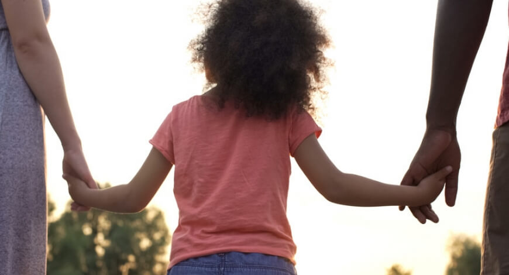
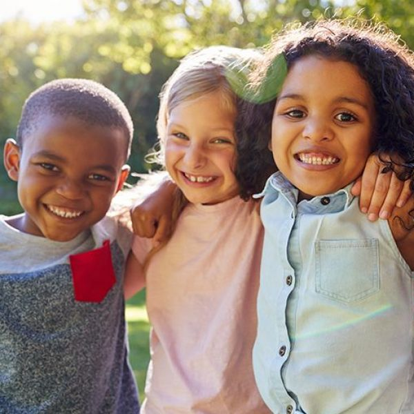
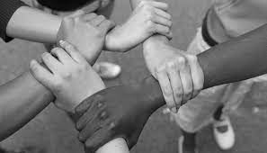

Art. 2º
Art. 2º Considera-se criança, para os efeitos desta Lei,
a pessoa até doze anos de idade incompletos,
e adolescente aquela entre doze e dezoito anos de idade.

Art. 1º Esta Lei dispõe sobre a proteção integral à criança e ao adolescente.
Art. 2º Considera-se criança, para os efeitos desta Lei,
a pessoa até doze anos de idade incompletos,
e adolescente aquela entre doze e dezoito anos de idade.
Art. 3º A criança e o adolescente gozam de todos os direitos fundamentais inerentes à pessoa humana, sem prejuízo da proteção integral de que trata esta Lei, assegurando-se-lhes, por lei ou por outros meios, todas as oportunidades e facilidades, a fim de lhes facultar o desenvolvimento físico, mental, moral, espiritual e social, em condições de liberdade e de dignidade.Parágrafo único. Os direitos enunciados nesta Lei aplicam-se a todas as crianças e adolescentes, sem discriminação de nascimento, situação familiar, idade, sexo, raça, etnia ou cor, religião ou crença, deficiência, condição pessoal de desenvolvimento e aprendizagem, condição econômica, ambiente social, região e local de moradia ou outra condição que diferencie as pessoas, as famílias ou a comunidade em que vivem. (incluído pela Lei nº 13.257, de 2016)
Art. 4º É dever da família, da comunidade, da sociedade em geral e do poder público assegurar, com absoluta prioridade, a efetivação dos direitos referentes à vida, à saúde, à alimentação, à educação, ao esporte, ao lazer, à profissionalização, à cultura, à dignidade, ao respeito, à liberdade e à convivência familiar e comunitária.
rt. 5º Nenhuma criança ou adolescente será objeto de qualquer forma de negligência, discriminação, exploração, violência, crueldade e opressão, punido na forma da lei qualquer atentado, por ação ou omissão, aos seus direitos fundamentais.
Art. 6º Na interpretação desta Lei levar-se-ão em conta os fins sociais a que ela se dirige, as exigências do bem comum, os direitos e deveres individuais e coletivos, e a condição peculiar da criança e do adolescente como pessoas em desenvolvimento.

Art. 7º A criança e o adolescente têm direito a proteção à vida e à saúde, mediante a efetivação de políticas sociais públicas que permitam o nascimento e o desenvolvimento sadio e harmonioso, em condições dignas de existência.
Art. 9º O poder público, as instituições e os empregadores propiciarão condições adequadas ao aleitamento materno, inclusive aos filhos de mães submetidas a medida privativa de liberdade.§ 1 o Os profissionais das unidades primárias de saúde desenvolverão ações sistemáticas, individuais ou coletivas, visando ao planejamento, à implementação e à avaliação de ações de promoção, proteção e apoio ao aleitamento materno e à alimentação complementar saudável, de forma contínua. (Incluído pela Lei nº 13.257, de 2016)§ 2 o Os serviços de unidades de terapia intensiva neonatal deverão dispor de banco de leite humano ou unidade de coleta de leite humano. (Incluído pela Lei nº 13.257, de 2016).
Art. 12.Os estabelecimentos de atendimento à saúde, inclusive as unidades neonatais, de terapia intensiva e de cuidados 20Estatuto da Criança e do Adolescenteintermediários, deverão proporcionar condições para a permanência em tempo integral de um dos pais ou responsável, nos casos de internação de criança ou adolescente. (Redação dada pela Lei nº 13.257, de 2016)
Art. 22. Aos pais incumbe o dever de sustento, guarda e educação dos filhos menores,
cabendo-lhes ainda, no interesse destes, a obrigação de cumprir e fazer cumprir as determinações
judiciais.Parágrafo único. A mãe e o pai, ou os responsáveis, têm direitos iguais e deveres e
responsabilidades compartilhados no cuidado e na educação da criança, devendo ser resguardado o
direito de transmissão familiar de suas crenças e culturas, assegurados os direitos da criança
estabelecidos nesta Lei. (Incluído pela Lei nº 13.257, de 2016)